Tecniche di animazione digitale
Storia dell'animazione: dalla lanterna magica al computer
Una cronologia per immagini e video. L'animazione, cioè la simulazione di un movimento che non c'è, è più antica del cinema.
Frecce ← → per passare da un blocco all'altro, clic su un'immagine per ingrandirla, clic sul fermo immagine per avviare un video.
- 1. Che cos'è un medium
- 1b. I social media
- 2. Cinema e animazione
- 3. La lanterna magica
- 4. Giocattoli ottici e fotografia
- 5. Reynaud e il cinema
- 6. Il trucco e il passo uno
- 7. Pupazzi, oggetti, ritagli
- 8. Animazione astratta
- 9. Il computer
- 10. Il post-cinema
- 11. Matrix
- 12. L'intelligenza artificiale
- 13. La contraffazione
- 14. Temporalità altre
1Che cos'è un medium Marshall McLuhan
La distinzione tra cinema e animazione parte da una definizione di medium. La più influente è quella di McLuhan: contano gli effetti del mezzo, più di ciò che trasmette.
Marshall McLuhan, Understanding Media: The Extensions of Man
McLuhan (1911-1980), professore di letteratura inglese a Toronto, si afferma negli anni Sessanta come studioso dei media. Il libro è tradotto in italiano come Gli strumenti del comunicare. Un medium è un'estensione dell'essere umano: una tecnologia che prolunga una facoltà del corpo o dei sensi. Sono media la stampa e la televisione, ma anche l'automobile, la cui ruota è una versione tecnologica del piede, e le reti elettriche, estensioni del sistema nervoso.
Il medium è il messaggio
Gli effetti decisivi di un medium non dipendono da ciò che trasmette, ma dalla sua natura tecnica. Il «messaggio» è il cambiamento di scala, di ritmo o di schema che introduce nelle faccende umane. La ferrovia non ha inventato il movimento o il trasporto: li ha accelerati e allargati, creando nuovi tipi di città e di lavoro, qualunque fosse il carico dei treni. La luce elettrica non ha contenuto, eppure crea un ambiente con la sua sola presenza.
Un medium dentro l'altro
Il contenuto di un medium è sempre un altro medium: la scrittura contiene il parlato, la stampa contiene la scrittura. Un nuovo medium imita dapprima i precedenti: il primo libro stampato imita il manoscritto, il cinema imita il teatro. Per McLuhan il contenuto è il pezzo di carne con cui il ladro distrae il cane da guardia: l'attenzione si ferma su ciò che viene trasmesso, e il medium agisce senza essere notato.
Il messaggio del cinema
Nello stesso capitolo McLuhan indica il messaggio del cinema nel passaggio dalle connessioni lineari alle configurazioni. L'idea che ogni medium abbia caratteristiche proprie, la specificità mediale, ha un precedente nella critica d'arte di Clement Greenberg, come ricostruisce Jay David Bolter in Plenitudine digitale (2019).
2Cinema e animazione le differenze
Nella cultura di massa il cinema è il film narrativo hollywoodiano e l'animazione è il cartone animato. È una distinzione di canoni e di contenuti. Le differenze di medium stanno nel modo in cui l'immagine in movimento viene prodotta.
Registrato o simulato
Il cinema riprende in tempo reale una situazione che si sviluppa nel tempo: il compito dell'operatore è inquadrarla e circoscriverla. L'animazione mette in scena un trucco che manipola consapevolmente il tempo lineare. Quello che accomuna le sue forme, dal cartone animato alla stop motion agli effetti speciali, è la simulazione di un movimento inesistente: la messa in scena di una mancanza.
Una contraffazione del tempo
L'economia del tempo è rovesciata. Un disegno può richiedere minuti o ore e nel film dura una frazione di secondo. L'animazione è una contraffazione del tempo e la simulazione di un'assenza, quella del movimento.
Una macchina, molte pratiche
Il cinema ha una data di nascita e un dispositivo comune: una macchina che registra e una che proietta. L'animazione non ha una data di nascita, perché è un insieme eterogeneo di pratiche, e può fare a meno della ripresa: la lanterna magica e il teatro ottico proiettano immagini disegnate senza cinepresa. Con il passo uno la cinepresa non registra un accadimento: acquisisce un'immagine alla volta.
Impronta o costruzione
Per Lev Manovich, teorico dei nuovi media, in What is Digital Cinema? (1995) il cinema è l'arte dell'indice: fa arte da un'impronta della realtà e cancella le tracce della propria produzione. L'animazione esibisce il proprio artificio e ammette che le sue immagini sono rappresentazioni, con un linguaggio più vicino alla grafica che alla fotografia.
Norman McLaren: l'arte del movimento
Per McLaren (1914-1987), animatore del National Film Board of Canada, l'animazione è «l'arte del movimento che viene disegnato»: ciò che sta fra un disegno e l'altro conta più di ciò che sta nel disegno. Nel cinema l'intervallo tra i fotogrammi è uniforme e dato dalla macchina; nell'animazione è una decisione di chi anima.
3La lanterna magica Seicento-Ottocento
Una fonte di luce, un vetro dipinto, una serie di lenti: l'immagine ingrandita sulla parete. È il proiettore, due secoli prima del cinema.
Christiaan Huygens
Matematico, fisico e astronomo olandese (1629-1695): scopre Titano, inventa l'orologio a pendolo, formula la teoria ondulatoria della luce. Nei suoi appunti disegna dieci figure di uno scheletro «da rappresentare con vetri convessi in una lanterna»: è la più antica testimonianza documentata.
Thomas Rasmussen Walgensten
Matematico danese, porta in giro per l'Europa spettacoli con la lanterna ed è tra i primi a chiamarla laterna magica.
Athanasius Kircher, Ars magna lucis et umbrae
Nella seconda edizione del trattato descrive e illustra la lanterna.
Lanternisti e vetri
Il lanternista è un mestiere spesso itinerante, da fiera. Fino ai primi decenni dell'Ottocento i vetri sono dipinti a mano; poi arrivano la stampa in serie e i vetri fotografici. Vetri meccanici, con leve e ruote, fanno muovere parti dell'immagine. Le lanterne a due obiettivi permettono le dissolvenze.
Panorama e diorama
Robert Barker brevetta il dipinto a 360 gradi (1787). Louis Daguerre, pittore di scena e futuro inventore della fotografia, apre il diorama (1822): la luce trasforma la tela.
Étienne-Gaspard Robertson, Fantasmagorie
Fisico e aeronauta di Liegi (1763-1837). A Parigi proietta spettri da dietro lo schermo con una lanterna su ruote, il fantascopio: avvicinandosi e allontanandosi, le figure crescono e rimpiccioliscono.
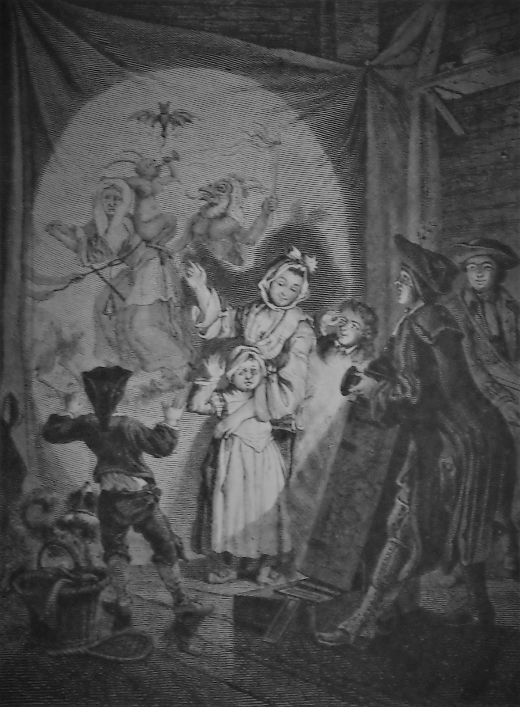
4Giocattoli ottici e fotografia 1824-1882
Studi sulla percezione del movimento e giocattoli che lo producono: i «giocattoli filosofici». Tra prima e seconda rivoluzione industriale il movimento meccanico è una meraviglia anche domestica.
Peter Mark Roget e il mito della persistenza
Il saggio sui raggi di una ruota visti attraverso le fessure di una persiana è indicato di solito come origine della «persistenza della visione». Anderson e Fisher (1978) mostrano che Roget non usa mai l'espressione, e che il movimento apparente non dipende da un residuo sulla retina, ma dal cervello.
Taumatropio
Un disco con due figure sulle due facce: facendolo ruotare, le figure si sovrappongono. Attribuito a John Ayrton Paris; data e paternità sono discusse.
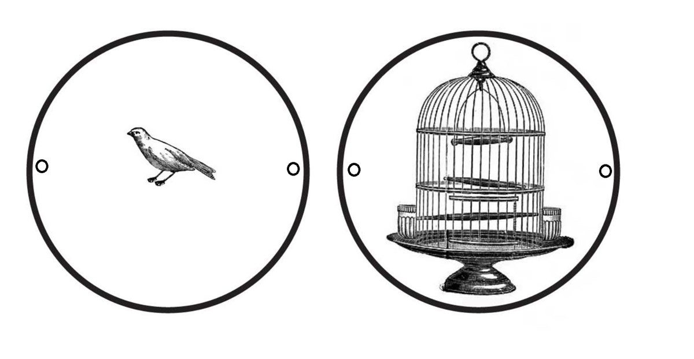
Fenachistoscopio
Joseph Plateau: un disco con una sequenza di figure, guardato allo specchio attraverso fessure mentre gira. Negli stessi anni Simon Stampfer, a Vienna, costruisce lo stroboscopio.
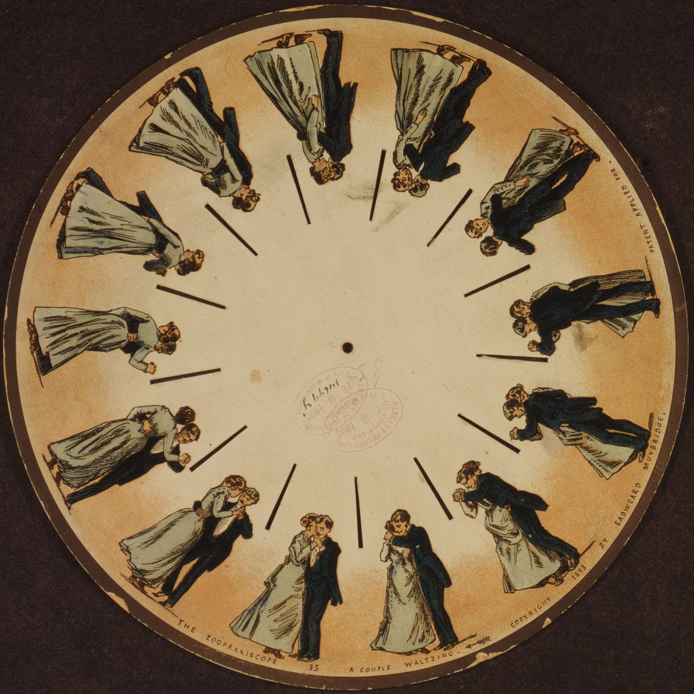
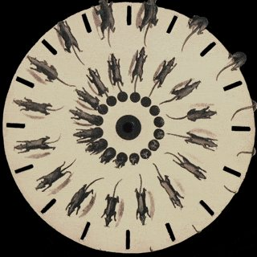
Zoetropio
Un cilindro con fessure e una striscia di disegni all'interno. Ideato da William Horner nel 1834; la versione con strisce intercambiabili è diffusa da Milton Bradley nel 1866.
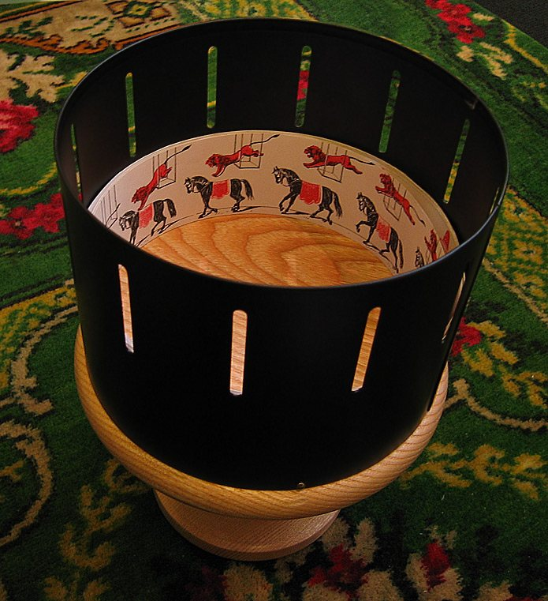
Uchatius e il folioscopio
Franz von Uchatius proietta i dischi animati con una lanterna (1853): il primo incontro tra proiezione e illusione del movimento. John Barnes Linnett brevetta il libretto da sfogliare (1868).
Nasce la fotografia
Il 7 gennaio 1839 François Arago annuncia all'Accademia delle scienze di Parigi il dagherrotipo di Louis Daguerre; il procedimento è reso pubblico il 19 agosto. Nello stesso anno William Henry Fox Talbot presenta in Inghilterra i suoi disegni fotogenici. La prima fotografia conservata è di Nicéphore Niépce, intorno al 1826-27.
Prassinoscopio
Émile Reynaud sostituisce le fessure dello zoetropio con un anello di specchi al centro: l'immagine è più luminosa e stabile.
Eadweard Muybridge, The Horse in Motion
Una batteria di dodici macchine fotografiche lungo una pista scompone il galoppo di un cavallo. Pochi anni dopo, nel 1882, Étienne-Jules Marey costruisce il fucile cronofotografico.
5Reynaud e la nascita del cinema 1888-1895
Émile Reynaud, il teatro ottico
Reynaud (1844-1918), formato tra disegno, meccanica e fotografia, assistente dell'abate Moigno nelle conferenze con la lanterna, poi insegnante. Unisce lanterna magica e prassinoscopio: una lunga striscia di immagini dipinte a mano, proiettata su uno schermo. Brevetto chiesto nel dicembre 1888 e registrato il 14 gennaio 1889. Dal 28 ottobre 1892, al Museo Grévin di Parigi, le Pantomimes lumineuses, tra cui Pauvre Pierrot: le prime immagini animate proiettate a un pubblico pagante.
Kinetoscopio
Thomas Edison e William K. L. Dickson: film su pellicola, guardati da una persona alla volta dentro una cassa.
Nasce il cinema
Auguste e Louis Lumière proiettano a pagamento il cinématographe al Salon indien del Grand Café, a Parigi. Una sola macchina riprende e proietta; la cinepresa registra quello che accade davanti all'obiettivo, in tempo reale.
Il cinema ingloba l'animazione
Il successo del teatro ottico svanisce rapidamente di fronte alla meraviglia dell'immagine cinematografica. La macchina di Reynaud è complessa e difficile da maneggiare; cinepresa e proiettore diventano lo strumento comune. I segni disegnati a mano vengono acquisiti con singole esposizioni, il passo uno, e poi riprodotti.
6Il trucco e il passo uno 1896-1918
Nel cinema delle attrazioni (Tom Gunning, André Gaudreault) effetto speciale, magia e animazione non sono separati. Il passo uno riprende un fotogramma alla volta.
Georges Méliès
Figlio di un produttore di calzature, rileva il teatro di Robert-Houdin nel 1888; fallisce e negli anni Venti vende giocattoli a Montparnasse. Prestigiatore: oggetti e persone che scompaiono, si moltiplicano, cambiano dimensione, davanti a scenografie dipinte.
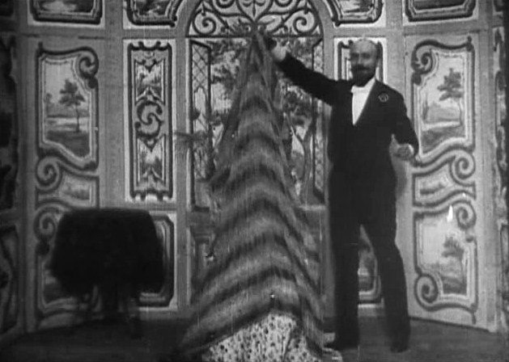
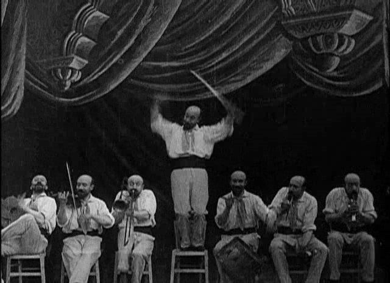
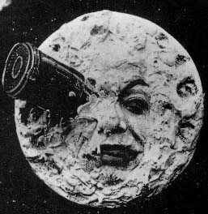
Arthur Melbourne-Cooper, Matches' Appeal
Fiammiferi animati che scrivono un appello per le truppe della guerra anglo-boera. Indicato come il più antico film a passo uno; la data è discussa.
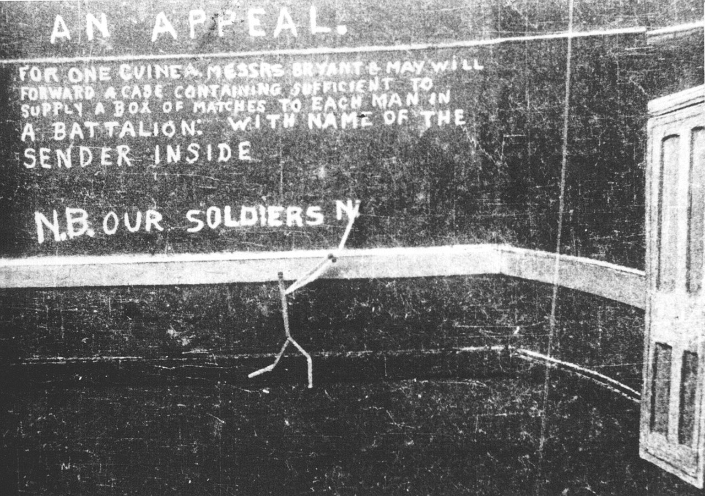
J. Stuart Blackton
Inglese emigrato a New York, illustratore e artista di vaudeville, fonda la Vitagraph nel 1897. Disegni alla lavagna che prendono vita, oggetti che si muovono da soli.
Segundo de Chomón
Per Pathé: oggetti e arredi che si muovono da soli.
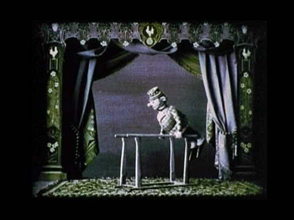
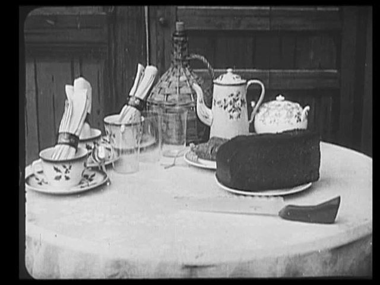
Émile Cohl, Fantasmagorie
Caricaturista allievo di André Gill, entra nel cinema a cinquant'anni. Considerato il primo cartone animato: figure tracciate a linee bianche su fondo nero che si trasformano l'una nell'altra.
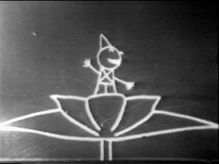
Winsor McCay
Disegnatore di manifesti e di giornali, autore di Little Nemo in Slumberland (1905), artista di vaudeville. Little Nemo (1911), Gertie the Dinosaur (1914), The Sinking of the Lusitania (1918). Con McCay il cartone americano si costruisce sul personaggio e sulla sua recitazione.
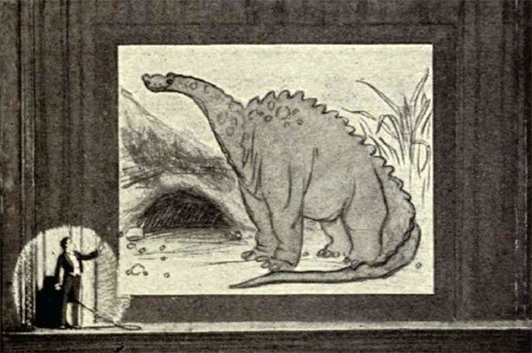
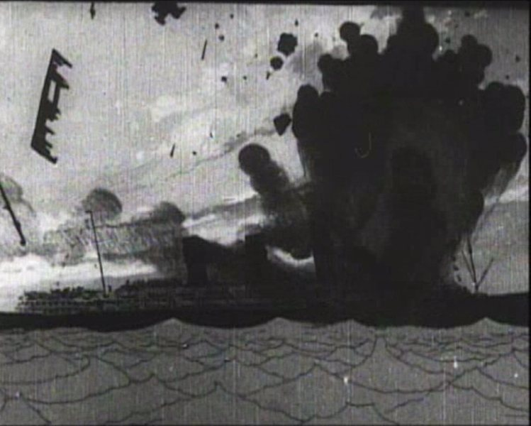
7Pupazzi, oggetti, ritagli 1912-1986
La linea europea: il movimento dato a pupazzi, oggetti e materiali reali.
Ladislas Starewicz
Polacco, lavora in Russia e poi in Francia. Insetti e animali imbalsamati o costruiti come pupazzi.
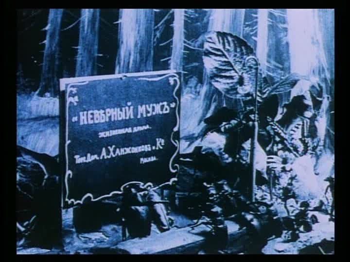
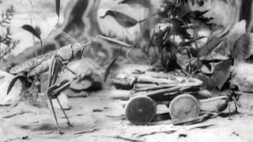
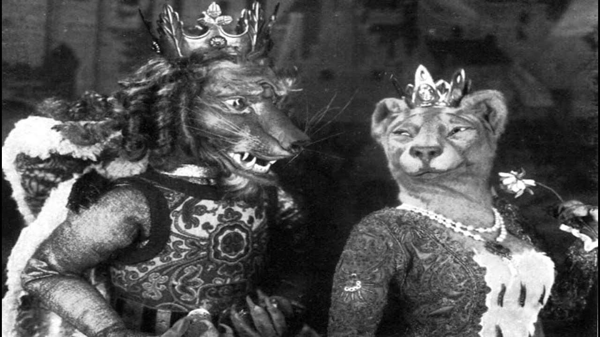
Lotte Reiniger, Le avventure del principe Achmed
Il più antico lungometraggio animato conservato. Silhouette ritagliate in cartone e metallo sottile, animate su un tavolo luminoso.
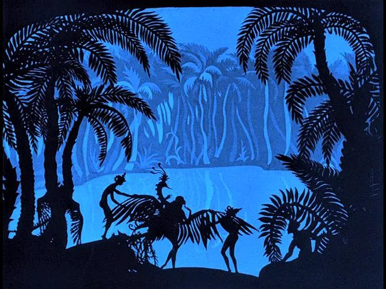
Trnka, Švankmajer, i fratelli Quay
Jiří Trnka, Ruka (La mano, 1965): una marionetta contro la mano del potere. Jan Švankmajer: argilla, oggetti e corpi che si smontano e si ricompongono. Fratelli Quay, Street of Crocodiles (1986): un peep-show messo in moto in un museo.
8Animazione astratta anni Venti
Pittura nel tempo, musica per gli occhi
In Germania: Viking Eggeling, Symphonie diagonale; Hans Richter, Rhythmus 21; Walter Ruttmann, Lichtspiel Opus 1; Oskar Fischinger, An Optical Poem (1938, negli Stati Uniti).
9Il computer 1958-1995
Quattro linee che si scambiano persone e tecniche: ricerca e uso, frammenti nel cinema, arte, intrattenimento.
John Whitney
Costruisce un computer analogico riadattando un congegno militare per il puntamento antiaereo. Titoli di La donna che visse due volte (1958, con Saul Bass), Catalog (1961), Permutations (1968).
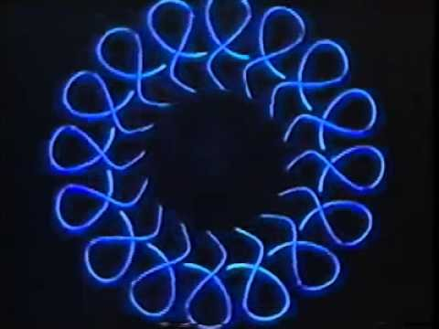
Animare per progettare
KTH, Stoccolma: un'auto su un'autostrada in progetto (1961). Edward Zajac: un satellite in orbita (1963). William Fetter, Boeing: Boeing Man e Carrier Landing (1964-65), prove ergonomiche per le cabine.
Bell Labs
Edward Zajac simula un satellite in orbita (1963). Ken Knowlton scrive BEFLIX (1963), linguaggio per l'animazione al computer. Michael Noll, A Computer-Generated Ballet (1964). Stan VanDerBeek e Knowlton, Poemfield (1964-67). Lillian Schwartz lavora con i Bell Labs dal 1968.
Nikolaj Konstantinov, Kitty
Un gatto che cammina, calcolato risolvendo equazioni: considerato il primo cartone animato digitale.
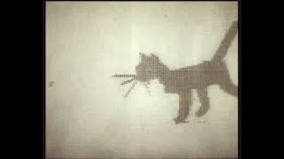
Charles Csuri e James Shaffer, Hummingbird
Un colibrì che si scompone, circa 30.000 immagini. Alla stessa data appartiene Flexipede di Tony Pritchett, mostrato a Cybernetic Serendipity (Londra, 1968).
Peter Foldès, Metadata e La Faim
Disegno animato con l'interpolazione al computer, che calcola i fotogrammi intermedi tra due disegni.
Edwin Catmull e Fred Parke, A Computer Animated Hand
Un progetto per un corso, a Utah: un calco della mano con circa 350 poligoni. Non doveva uscire dal laboratorio.
Frammenti nel cinema
Il mondo dei robot (1973): la visione dell'androide. Futureworld (1976): la mano di Catmull su un monitor, prima animazione 3D in un lungometraggio. Guerre stellari (1977): la Morte Nera di Larry Cuba. Star Trek II e Tron (1982). Piramide di paura (1985). Terminator 2 (1991). Jurassic Park (1993). Toy Story (1995). Prima schermi, poi effetti, infine film interi.
Arte
Lillian Schwartz, Pixillation (1970). Larry Cuba, 3/78 (1978). Ed Emshwiller, Sunstone (1979). Rebecca Allen, Swimmer (1981). Yoichiro Kawaguchi, Growth (1982-83). William Latham, The Evolution of Form (1986).
Intrattenimento
Spacewar! (1962), MIT: animazione calcolata su cui si gioca. The Adventures of André and Wally B. (1984). Luxo Jr. (1986), Pixar. Tin Toy (1988), primo Oscar a un corto in computer grafica.
Dal NYIT a Pixar
Al New York Institute of Technology Alexander Schure tenta il primo lungometraggio al computer. Il film non arriva, ma vi si forma il gruppo di Ed Catmull e Alvy Ray Smith, che passa alla Lucasfilm nel 1979 e fonda Pixar nel 1986.
10Il post-cinema secondo Manovich
Le storie di animazione, cinema e fotografia sono intrecciate: il momento in cui si sono distinte nettamente è più l'eccezione che la regola. Oggi la ripresa dal vivo è spesso residuale, e l'immagine è una composizione più pittorica che cinematografica.
Lev Manovich, What is Digital Cinema?
Prima del cinema le immagini sono costruite a mano. Il cinema si definisce come registrazione e delega tutto questo all'animazione, il suo parente illegittimo. Con il digitale il girato perde il rapporto privilegiato con la realtà e torna materia da dipingere. Due rovesciamenti: la produzione diventa la prima fase della post-produzione; il cinema digitale è un caso particolare di animazione.
Dal riorganizzare la realtà al riorganizzare le immagini
Antonioni fa dipingere un prato per Zabriskie Point; in Apollo 13 l'erba si aggiunge al computer. La minaccia fantasma (1999): 65 giorni di riprese, oltre due anni di post-produzione.
Due genealogie
Per Manovich i Lumière definiscono il fare film come ripresa, Méliès come post-produzione. Il cinema digitale prolunga la seconda linea.
L'ibrido
Il software crea un insieme comune di tecniche per film, cartoni e video. L'animazione si dissolve come medium separato e diventa una serie di strumenti generali. I film girati su un set digitale (Sin City, 300, Avatar) sono una nuova specie visiva.
11Matrix la fine della ripresa come atto unico
Manovich, Image Future (2006): Universal Capture, sviluppato da John Gaeta e George Borshukov per Matrix Reloaded e Revolutions (2003).
Una simmetria e uno scarto
Il film racconta un universo mantenuto dai computer ed è fatto di immagini assemblate da software. Ma i computer della finzione lavorano in tempo reale, mentre molte scene hanno richiesto mesi o anni.
Campionare invece di simulare
Cinque videocamere sincronizzate riprendono l'attore; algoritmi seguono ogni pixel; i dati si combinano con una scansione 3D. La recitazione diventa un oggetto 3D, da illuminare e inquadrare da qualunque punto. Nella rissa di Matrix Reloaded è tutto generato al computer, e la camera virtuale compie movimenti impossibili su un set.
Né animazione né cinema
Niente animazione manuale, niente simulazione della fisica: una libreria di recitazioni, come nel campionamento musicale. Il regista «disegna» a un livello superiore, con intere sequenze. La recitazione è registrata in frammenti, l'inquadratura si decide dopo, la scena esiste al termine di mesi di calcolo.
Il game engine sul set
Con gli schermi LED delle produzioni virtuali, gli ambienti esistono prima che la camera registri, e la camera registra fenomeni calcolati in tempo reale (Tom Livingstone, 2024). I motori di gioco, costruiti sullo spazio e non sulla linea del tempo, resistono però al montaggio (Richard Misek, 2020).
12L'intelligenza artificiale registrare, simulare, prevedere
Manovich e Arielli: dalla simulazione alla previsione
Cinque stadi: mano; mano con dispositivi; registrazione; simulazione al computer; previsione. I modelli non creano da zero e non catturano un fenomeno: derivano da un archivio di altri media.
L'IA come medium
Manovich, A Medium That Thinks: per McLuhan i media modellano il pensiero, qui il medium stesso svolge compiti cognitivi. Sei proprietà, tra cui lo scambio tra variabilità e controllo e la tendenza al normale. L'oggetto unico lascia il posto a variazioni senza fine.
La critica
Hito Steyerl, Mean Images: rese statistiche e non immagini di cose esistenti, dai ritratti compositi di Galton al microlavoro nascosto. Roland Meyer, Platform Realism: immagini generiche, senza tempo né luogo, una previsione rivolta all'indietro. Alan Warburton, The Wizard of AI (2023): saggio video fatto con quegli stessi strumenti.
Registrato, simulato, previsto
Il movimento non è accaduto e non è stato disegnato. La traccia non è del mondo né della mano, ma statistica, di un archivio. Il tempo si rovescia un'altra volta: secondi di calcolo per secondi di immagine. Se l'animazione è la simulazione di un movimento inesistente, il video generativo ne è la forma più radicale; se è l'arte del movimento disegnato (McLaren), ne resta fuori.
13La contraffazione meraviglia, inganno, indifferenza
Una moneta contraffatta deve passare per vera; l'animazione dichiara quasi sempre il proprio trucco. Lo stesso procedimento produce meraviglia o inganno, secondo il patto con chi guarda.
Lo spettatore che sa
Tom Gunning, An Aesthetic of Astonishment (1989): il pubblico dei Lumière non scambia l'immagine per la realtà, e lo stupore nasce dal sapere che è un'immagine. Neil Harris (1973): si paga anche per capire il trucco. Simon During (2002): la magia secolare di Robert-Houdin. Terry Castle (1988): si sa che i fantasmi non esistono, e tuttavia li si vede. Octave Mannoni (1969): «so bene, ma comunque…».
Originale, falso, simulacro
Nelson Goodman (1968): il falso pretende una storia di produzione che non ha. Umberto Eco (1975): la semiotica studia tutto ciò che può servire a mentire. Jean Baudrillard: contraffazione, produzione, simulazione; dissimulare è fingere di non avere ciò che si ha, simulare è fingere di avere ciò che non si ha. McCay, The Sinking of the Lusitania (1918): disegni per un evento senza riprese, a fini di propaganda.
L'indifferenza
Hannah Arendt, Verità e politica (1967): l'avversario della verità di fatto è meno la menzogna che l'opinione. Harry Frankfurt, On Bullshit (1986): il bugiardo rispetta la verità che nasconde, un altro discorso ne è indifferente. Lee McIntyre (2018), Maurizio Ferraris (2017).
La fine di una garanzia
Regina Rini (2020): le registrazioni sostengono la fiducia nelle testimonianze, e i deepfake la minano. Don Fallis (2021): la loro esistenza riduce l'informazione di ogni immagine. Chesney e Citron (2019): chi è stato ripreso può dichiarare falso il video. David Claerbout: l'autenticazione reciproca della lente è finita.
14Temporalità altre oltre il tempo lineare
Il cinema narrativo organizza il tempo come progressione attraverso eventi unici. L'animazione, che costruisce il tempo fotogramma per fotogramma, ha sperimentato altre forme.
Il tempo che ritorna
Per Bergson (1907) il movimento del cinema è falso, perché sta nell'apparecchio; Gunning (2014) risponde che lo si vive comunque al presente. Gli apparecchi precinematografici si basano su brevi loop. Il cinema li relega ai margini; per Manovich tornano con il computer, perché il loop è la struttura elementare della programmazione. Zbigniew Rybczyński, Tango (1981).
Tempi diversi nello stesso fotogramma
Rybczyński, The Fourth Dimension (1988). Daniel Crooks, Time Slice (dal 1999): fette di pixel di istanti diversi. William Kentridge: le tracce cancellate restano nel fotogramma successivo.
La durata contro il racconto
David Claerbout, Vietnam, 1967 (2001): l'aereo sospeso, la luce che cambia. The Pure Necessity (2016): anni di lavoro manuale per animali che non fanno nulla.
Il tempo reale del game engine
L'immagine viene calcolata mentre la si guarda. Claerbout, Olympia (dal 2016): uno stadio che crolla per mille anni. John Gerrard, Solar Reserve (2014), Western Flag (2017). Ian Cheng, Emissaries (2015-17): senza inizio né fine. David O'Reilly, Everything (2017).
Lo spazio latente
Il tempo è un percorso in cui una forma passa nell'altra senza una causa. Refik Anadol, Unsupervised (2022).
Fonti
- Marshall McLuhan, Understanding Media: The Extensions of Man, 1964 (Gli strumenti del comunicare).
- Jay David Bolter, Plenitudine digitale, 2019. Stefano Gualeni, Il videogioco del mondo, 2024.
- Lev Manovich, What is Digital Cinema?, 1995; Image Future, 2006; Il linguaggio dei nuovi media; Software Takes Command, 2013; con Emanuele Arielli, Artificial Aesthetics, 2023; A Medium That Thinks, 2026.
- Hito Steyerl, Mean Images, 2023. Roland Meyer, Platform Realism, 2025. Tom Livingstone, Game engines, 2024. Richard Misek, 'Real-time' virtual reality, 2020.
- Tom Gunning, An Aesthetic of Astonishment, 1989; Animation and Alienation, 2014. Joseph Anderson e Barbara Fisher, The Myth of Persistence of Vision, 1978. Neil Harris, Humbug, 1973. Simon During, Modern Enchantments, 2002. Terry Castle, Phantasmagoria, 1988. Octave Mannoni, Clefs pour l'imaginaire, 1969.
- Nelson Goodman, Languages of Art, 1968. Umberto Eco, Trattato di semiotica generale, 1975. Jean Baudrillard, Lo scambio simbolico e la morte, 1976; Simulacri e impostura, 1981.
- Hannah Arendt, Verità e politica, 1967. Harry Frankfurt, On Bullshit, 1986. Lee McIntyre, Post-Truth, 2018. Maurizio Ferraris, Postverità e altri enigmi, 2017. Regina Rini, 2020. Don Fallis, 2021. Chesney e Citron, 2019.
- Giannalberto Bendazzi, Animazione. Una storia globale, UTET, 2017.
- Davide Giurlando (a cura di), Fantasmagoria. Un secolo (e oltre) di cinema d'animazione, Marsilio, 2017.
- Laurent Mannoni, The Great Art of Light and Shadow, University of Exeter Press, 2000.
- Jacob Gaboury, Image Objects, MIT Press, 2021.
- Schede del database: Georges Méliès. Lezione collegata: David Claerbout.
- Le immagini sono usate a scopo didattico. Se sei titolare dei diritti e vuoi che un'immagine venga tolta, apri una issue nel repository.
1bUn caso attuale i social media
Il messaggio di una piattaforma non sta nei post, ma nella struttura: flusso continuo, ordinamento algoritmico, metriche pubbliche, nessun filtro redazionale.
Dalla folla allo sciame
Gustave Le Bon, Psicologia delle folle (1895): individui che si fondono in un'unità. Byung-Chul Han, Nello sciame (2013): individui isolati, senza un Noi e senza una sola voce; ne risulta un frastuono, la shitstorm.
Movimenti senza organizzazione
Bennett e Segerberg, The Logic of Connective Action (2013): la condivisione personale sostituisce l'organizzazione. Zeynep Tufekci, Twitter and Tear Gas (2017): radunarsi è veloce, ma i movimenti restano fragili. Papacharissi, Affective Publics (2015).
Effetti reali, non uniformi
Lorenz-Spreen e altri (2023), su quasi 500 studi: più partecipazione e informazione, ma anche polarizzazione, populismo e calo di fiducia nelle istituzioni. Vosoughi e altri (2018): il falso corre più del vero. Bail e altri (2018): vedere gli avversari può polarizzare di più. Guess e altri (2023): cambiare l'algoritmo per tre mesi non sposta la polarizzazione. La domanda di McLuhan regge, ma la ricerca non autorizza un determinismo semplice.